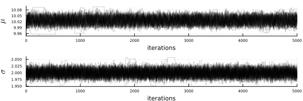

McmcHermes.jl
A documentation for the McmcHermes package.
McmcHermes provides a simple but efficient way to generate Markov Chain Monte-Carlo algorithms in order to sample a probability density distribution.
Overview
The major functions in this module are:
run_mcmc: run multiple chains with a specific number of walkers.
get_flat_chain: get the stored chain of MCMC samples.
get_gelman_rubin: get the Gelman Rubin convergence diagnostic of the chains.
This guide assumes that you already have define your likelihood, prior and the logarithm of the posterior probability as in the example below.
Pkg Registry
using Pkg
Pkg.add("McmcHermes")Example
First, let's generate some data:
using Distributions, Plots, LaTeXStrings, DataFrames, ProgressMeter
mu, sigma = 10, 2
l_b, u_b = 0, 20
d = Truncated(Normal(mu, sigma), l_b, u_b)
N = 1000
data = rand(d, N)
histogram(data, legend=false, size=(300,300), xlabel="data", show=true)
In order to sample the posterior probability distribution, it is necessary to define the likelihood, prior and logarithm of the posterior probability.
function log_likelihood(X::Vector, parameters::Vector)
mu, sigma = parameters[1], parameters[2]
y = 1 ./ (sqrt(2 * pi) .* sigma) .* exp.( -0.5 * ((X .- mu)./sigma).^2 )
return sum(log.(y))
end
function log_prior(parameters::Vector)
mu, sigma = parameters[1], parameters[2]
if 5.0 < mu < 15.0 && 0.0 < sigma < 4.0
return 0.0
end
return -Inf
end
function log_probability(X::Vector, parameters::Vector)
lp = log_prior(parameters)
if !isfinite(lp)
return -Inf
end
return lp + log_likelihood(X, parameters)
endCall the McmcHermes package and define the number of walkers, iterations, dimension of the parameter space and the initial guess.
using McmcHermes
mu, sigma = 10, 2
initparams = Vector{Float64}([mu, sigma])
n_iter, n_walkers = 1000, 100
n_dim, a = 2, 0.01
chain_tests = run_mcmc(log_probability, data, initparams, n_iter, n_walkers, n_dim, a=a)
println(size(chain_tests))(1000, 100, 2)
Gelman-Rubin's diagnostic can be obtained from the chains calling the get_gelman_rubin method.
println("Gelman Rubin Diagnostic: ", get_gelman_rubin(chain_tests))Gelman Rubin Diagnostic: 1.0206366055763267
Finally, plot the chains.
labels = Tuple([L"\mu", L"\sigma"])
x = 1:size(chain_tests)[1]
p = []
for ind in 1:n_dim
push!(p, plot(x, [chain_tests[:,i,ind] for i in 1:size(chain_tests)[2]], legend=false,
lc=:black, lw=1, ylabel=labels[ind], alpha = 0.1, xticks=false))
end
plot(p[1], p[2], layout = (2,1))
plot!(size=(600,200), xlims = (0, size(chain_tests)[1]), show=true)
flat_chains = get_flat_chain(chain_tests, burn_in=100, thin=10)
flat = DataFrame(flat_chains, :auto)
colnames = ["mu", "sigma"]
flat = rename!(flat, Symbol.(colnames))
using PairPlots, CairoMakie
pairplot(flat)
Develop by Steven Alfonso.